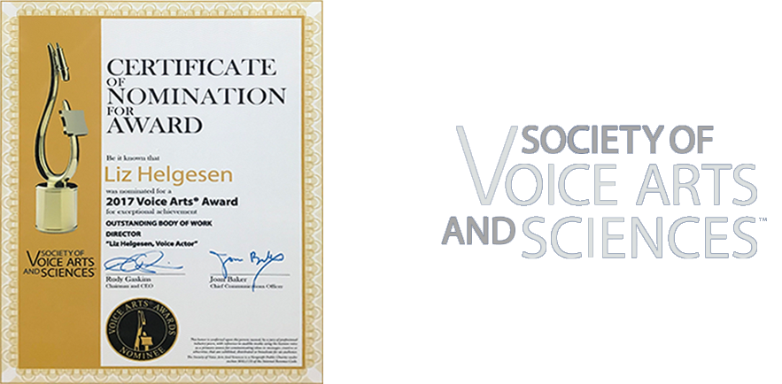
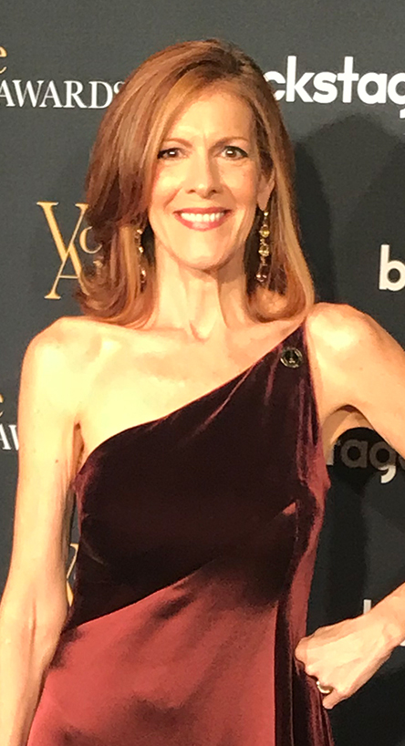

Outstanding Body of Work


We are overjoyed to announce that Mrs. Liz Helgesen is being formally recognized by the Society of Voice Arts and Sciences (SOVAS) for “Outstanding Body of Work.”
The New York based SOVAS recognizes top talent in the industry under several categories on an annual basis. According to SOVAS, that year’s entries were up 33 percent, and Liz clinched a nomination against a long list of high-caliber competitors. Being named a nominee for Outstanding Body of Work marked a 30 year career milestone. Liz is a model for the ambitious: persistence and passion culminating in a distinguished career.
See the announcement in Post Magazine